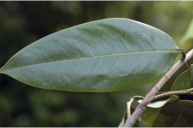
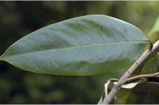

Evergreen trees up to 25 m tall.
25 ಮೀ. ವರೆಗಿನ ಎತ್ತರದ ನಿತ್ಯ ಹರಿದ್ವರ್ಣ ಮರಗಳು.
Evergreen trees up to 25 m tall.
பசுமைமாறாமரங்கள் 25 மீ. உயரம் வரை வளரக்கூடியது.
Bark dark brown, lenticellate; blaze reddish brown.
ತೊಗಟೆ ದಟ್ಟ ಕಂದು ಬಣ್ಣದಲ್ಲಿರುತ್ತದೆ ಮತ್ತು ಸೂಕ್ಷ್ಮ ವಾಯು ವಿನಿಮಯ ಬೆಂಡು ರಂಧ್ರಗಳ ಸಮೇತವಿರುತ್ತದೆ;ಕಚ್ಚು ಮಾಡಿದ ಜಾಗ ನಸುಗೆಂಪಾಗಿರುತ್ತದೆ.
Bark dark brown, lenticellate; blaze reddish brown.
மரத்தின் பட்டை கரும் ப்ரவுன் நிறமானது, பட்டைத்துளைகள் (லெண்டிசெல்லேட்) உடையது; உள்பட்டை சிவப்பு ப்ரவுன் நிறமானது.
Branches verticillate and right angles to main trunk; young branchlets terete, rufous pubescent.
ಕವಲುಗಳುಗಳು ಸುತ್ತು ಜೋಡನೆಯಲ್ಲಿದ್ದು ಮುಖ್ಯ ಕಾಂಡಕ್ಕೆ ಸಮಕೋನದಲ್ಲಿರುತ್ತವೆ;ಎಳೆಯ ಕಿರುಕೊಂಬೆಗಳು ದುಂಡಾಗಿದ್ದು ಕೆಂಗಂದು ಬಣ್ಣದ ಮೃದು ತುಪ್ಪಳದಿಂದ ಕೂಡಿರುತ್ತವೆ.
Branches verticillate and right angles to main trunk; young branchlets terete, rufous pubescent.
கிளைகள் வர்டிசில்லேட் மற்றும் நிலத்திற்கு கிடைமட்டமானது; சிறியநுனிக்கிளைகள் குறுக்குவெட்டுத் தோற்றத்தில் வளையமானது, உரோமங்களுடையது.
Sap reddish from cut end of bark, not profuse.
ತೊಗಟೆಯನ್ನು ಕೆತ್ತಿದಾಗ ಕೆಂಪು ಬಣ್ಣದ ವಿಫುಲವಾಗಿರದ ಸಸ್ಯ ರಸವಿರುತ್ತದೆ.
Sap reddish from cut end of bark, not profuse.
மரத்தின் பட்டை வெட்டப்படும் போது சிவப்பு நிற பால் குறைந்தளவு சுரக்கிறது.
Leaves simple, alternate, distichous; petiole 1-2 cm long, slightly canaliculate, subpubescent when young; lamina 11-26 x 4-10 cm, usually narrow oblong or oblong, sometimes lanceolate, apex abruptly or gradually acuminate, base usually rounded, sometimes slightly attenuate, margin entire, coriaceous, shinning above, glaucous beneath; midrib flat above; secondary_nerves 7-14 pairs, ascending; tertiary_nerves obscure, if visible laxly percurrent.
ಎಲೆಗಳು ಸರಳವಾಗಿದ್ದು ಪರ್ಯಾಯ ಮತ್ತು ಸುತ್ತು ಜೋಡನಾ ವ್ಯವಸ್ಥೆಯಲ್ಲಿದ್ದು ಕಾಂಡದ ಎರಡೂ ಕಡೆ ಎದುರು ಬದರಿನ ಲಂಬ ಸಾಲಿನಲ್ಲಿರುತ್ತವೆ ; ತೊಟ್ಟುಗಳು 1 ರಿಂದ 2 ಸೆಂ.ಮೀ. ಉದ್ದ ಹೊಂದಿದ್ದು ಕೊಂಚವಾದ ಕಾಲುವೆಗೆರೆ ಸಮೇತವಾಗಿರುತ್ತವೆ ಮತ್ತು ಎಳೆಯದಾಗಿದ್ದಾಗ ಉಪ-ಮೃದುತುಪ್ಪಳದಿಂದ ಕೂಡಿರುತ್ತವೆ;ಪತ್ರಗಳು 11 - 26 X 4 - 10 ಸೆಂ.ಮೀ.ವರೆಗಿನ ಗಾತ್ರವಿದ್ದು ಸಾಮಾನ್ಯವಾಗಿ ಸಂಕುಚಿತ ಚತುರಸ್ರ ಅಥವಾ ಚತುರಸ್ರ ಕೆಲವು ವೇಳೆ ಭರ್ಜಿಯ ಆಕಾರ ಹೊಂದಿದ್ದು, ಥಟ್ಟನೆ ಅಥವಾ ಅನುಕ್ರಮವಾಗಿ ಕ್ರಮೇಣ ಚೂಪಾಗುವ ತುದಿ ಹೊಂದಿದ್ದು ಬುಡ ಸಾಮಾನ್ಯವಾಗಿ ದುಂಡಾದ ಕೆಲವು ವೇಳೆ ಸ್ವಲ್ಪ ಮಟ್ಟಿಗೆ ಒಳಬಾಗಿದ ರೀತಿಯಲ್ಲಿರುತ್ತದೆ,ಅಂಚು ನಯವಾಗಿದ್ದು, ಮೇಲ್ಮೈ ತೊಗಲನ್ನೋಲುವ ರೀತಿಇರುತ್ತದೆ,ಪತ್ರಗಳು ರೋಮರಹಿತವಾಗಿರುತ್ತವೆ ಮತ್ತು ಮೇಲ್ಭಾಗದಲ್ಲಿ ಹೊಳಪಿನಿಂದ ಕೂಡಿದ್ದು ತಳಭಾಗ ಮಾಸಲು ಬೂದು ಹಸಿರು ಬಣ್ಣದಲ್ಲಿರುತ್ತದೆ ;ಮಧ್ಯ ನಾಳ ಮೇಲ್ಭಾಗದಲ್ಲಿ ಚಪ್ಪಟೆಯಾಗಿರುತ್ತದೆ; ಎರಡನೇ ದರ್ಜೆಯ ನಾಳಗಳು 7 - 14 ಜೋಡಿಗಳಿದ್ದು ಆರೋಹಣ ಮಾದರಿಯಲ್ಲಿರುತ್ತವೆ;ಮೂರನೇ ದರ್ಜೆಯ ನಾಳಗಳು ಅಸ್ಪಷ್ಟವಾಗಿರುತ್ತವೆ, ಕಂಡುಬಂದ ಪಕ್ಷದಲ್ಲಿ ಕವಲುಗಳು ಎಲೆದಿಂಡಿನ ಕಡೆಗಿರುತ್ತವೆ.
Leaves simple, alternate, distichous; petiole 1-2 cm long, slightly canaliculate, subpubescent when young; lamina 11-26 x 4-10 cm, usually narrow oblong or oblong, sometimes lanceolate, apex abruptly or gradually acuminate, base usually rounded, sometimes slightly attenuate, margin entire, coriaceous, shinning above, glaucous beneath; midrib flat above; secondary_nerves 7-14 pairs, ascending; tertiary_nerves obscure, if visible laxly percurrent.
இலைகள் தனித்தவை, மாற்றுஅடுக்கமானவை, இருநெடுக்கு வரிசையிலையடுக்கம் (டைஸ்டிக்கஸ்); இலைக்காம்பு 1-2 செ.மீ. நீளமானது, சிறிது குறுக்குவெட்டுத் தோற்றத்தில் கேனாலிகுலேட், இளம்பருவத்தில் உரோமங்களுடையது; இலை அலகு 11-26 X 4-10 செ.மீ., குறுகிய நீள்சதுர வடிவானது அல்லது நீள்சதுர வடிவானது, சிலசமயங்களில் ஈட்டி வடிவானது, அலகின் நுனி சிறிய அல்லது சீராக அதிக்கூரியது, அலகின் தளம் பொரும்பாலும் வட்டமானது, சிலசமயங்களில் சிறிது அட்டனுவேட், அலகின் விளிம்பு முழுமையானது, கோரியேசியஸ், அலகின் மேற்பரப்பு பளபளப்பானது, அலகின் கீழ்பரப்பு மெழுகுபூசியது (க்களாக்கஸ்) போன்றது; மையநரம்பு மேற்பரப்பில் அலகின் பரப்பிற்கு சமமானது; இரண்டாம் நிலை நரம்புகள் 7-14 ஜோடிகள், நுனி நோக்கி வளைந்தவை; மூன்றாம் நிலை நரம்புகள் கண்களுக்கு புலப்படாது, அல்லது அகன்ற பெர்க்கரண்ட்.
Flowers unisexual, dioecious; male flowers yellowish, in axillary panicles, fulvous pubescent; female flowers larger in axillary racemes.
ಹೂಗಳು ಏಕ ಲಿಂಗಿಗಳಾಗಿದ್ದು ಗಂಡು ಮತ್ತು ಹೆಣ್ಣು ಹೂಗಳು ಪ್ರತ್ಯೇಕ ಸಸ್ಯಗಳಲ್ಲಿರುತ್ತವೆ;ಗಂಡು ಹೂಗಳು ಹಳದಿ ಛಾಯೆಯನ್ನು ಹೊಂದಿದ್ದು ಅಕ್ಷಾಕಂಕುಳಿನಲ್ಲಿರುವ ಪುನರಾವೃತ್ತಿಯಾಗಿ ಕವಲೊಡೆದ ಪುಷ್ಪಮಂಜರಿಯಲ್ಲಿರುತ್ತವೆ ಹಾಗೂ ನಸುಗೆಂಪು ಮಿಶ್ರಿತ ಹಳದಿ ಬಣ್ಣದ ದಟ್ಟ ಮೃದುಗೂದಲಿಂದ ಕೂಡಿರುತ್ತವೆ;ಹೆಣ್ಣ ಹೂಗಳು ದೊಡ್ಡ ಗಾತ್ರದಲ್ಲಿದ್ದು ಅಕ್ಷಾಕಂಕುಳಿನಲ್ಲಿನ ಮಧ್ಯಾಭಿಸರ ಪುಷ್ಪಮಂಜರಿಯಲ್ಲಿರುತ್ತವೆ.
Flowers unisexual, dioecious; male flowers yellowish, in axillary panicles, fulvous pubescent; female flowers larger in axillary racemes.
மலர்கள் ஓர் பாலானவை, ஈரகம் கொண்டவை; ஆண் மலர்கள் மஞ்சள் நிறமானவை, இலைக்கோணங்களில் காணப்படும் பேனிக்கிள், உரோமங்களுடையது; பெண் மலர்கள் பெரியவை, ரெசீம், இலைக்கோணங்களில் காணப்படுபவை.
Capsule, globose, to 3.2 cm across, glabrous; seed one, globose, pale brown with laciniate aril.
ಸಂಪುಟ ಫಲ ಗೋಳಾಕಾರದಲ್ಲಿದ್ದು 3.2 ಸೆಂ.ಮೀವರೆಗಿನ ಗಾತ್ರ ಹೊಂದಿದ್ದು ರೋಮರಹಿತವಾಗಿರುತ್ತವೆ;ಬೀಜಗಳು ಒಂದಿದ್ದು ಗೋಳದ ಆಕಾರದಲ್ಲಿದ್ದು ತೆಳು ಕಂದು ಬಣ್ಣ ಹೊಂದಿರುತ್ತವೆ ಮತ್ತು ಆಳವಾದ ಸೀಳಿಕೆಗಳನ್ನುಳ್ಳ ಪತ್ರೆ ಸಮೇತವಾಗಿರುತ್ತವೆ.
Capsule, globose, to 3.2 cm across, glabrous; seed one, globose, pale brown with laciniate aril.
வெடிகனி (கேப்சியூல்), கோளவடிவானது, 3.2 செ.மீ. குறுக்களவுடையது, உரோமங்களற்றது; ஒரு விதையுள்ள கனி, கோளவடிவானது, வெளிறிய ப்ரவுன் நிறமானது பத்ரி (ஏரில்) உடையது.


 
